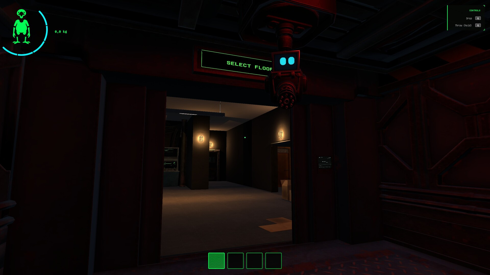

Procedural generation
Değişen zeminShifting ground
Bastığın zemin sürekli değişiyor; bildiğini sandığın koridorlar her seferinde seni bambaşka çıkmaz sokaklara sürüklüyor. Karanlığın derinliklerindeki değerli hurdayı bulmak için her köşeyi ara — ama attığın her adımla gölgelerde yeni bir tehdit uyanıyor. The ground beneath you keeps shifting; corridors you think you know lead to different dead ends every time. Search every corner for the valuable scrap hidden in the depths — but with every step, a new threat awakens in the shadows.